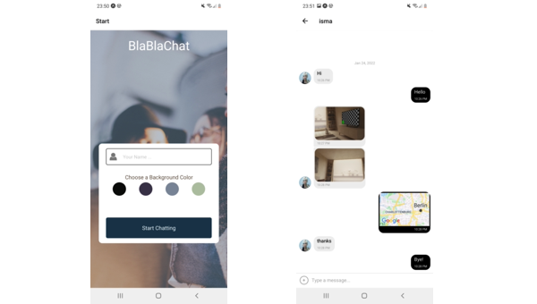

blablachat
BlaBlaChat is a chat app for mobile devices created using React Native. The app will provide users with a
chat interface and options to share images (from the gallery and
taken with the camera) and their location.
Users enter their name and select the color which will be used for rendering the start button, their
messages bubble and the custom actions button.
Stores messages and displays when the user is off-line.